Devlog Eleven Overview
In my mission to make the game actually more complete, I want to make a head start towards making it feel complete. So this update is a grouping of small stuff that will make the game feel more like a polished version of an actual game. And it's all things related to stuff the player would experience during their gameplay. Or will at some point.
Main Features
The first of the small updates is the block outline I added. I like it, but I think I might add a toggle to turn it on/ off in the future. I have a feeling it could become annoying after a while. But it is nice to have a clearer idea of what you as a player are actually looking at.
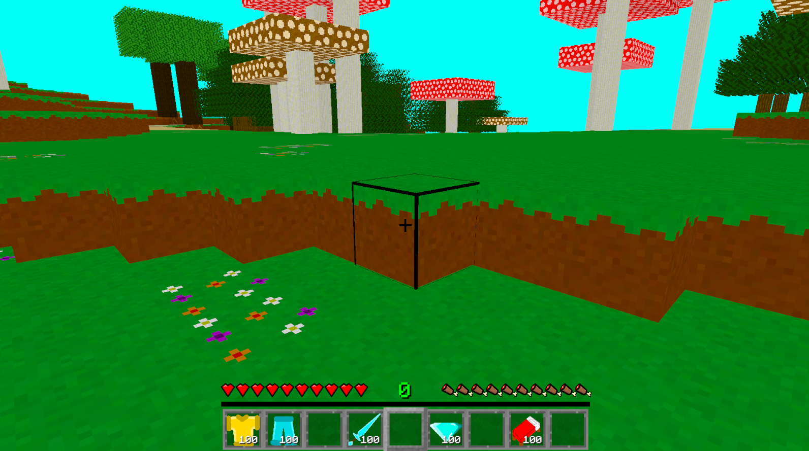
Next I added in the selected item text, so that when the player is switching between the items in their toolbar, a text field will pop up and display the name of the item. It's not often I have any reason to use Unity's animation system, so that was cool. I didn't take a video of it because I'm lazy, but there is a slight fade in and out. This is really useful for my game because some of my icons let's be honest, look a tad similar.
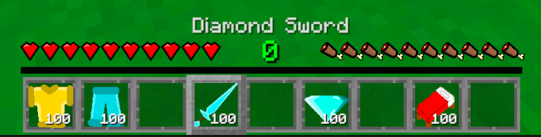
This next addition is something I didn't have to worry about till I started adding in non-cube blocks. In all previous versions of the game, blocks would have collision. Since they're all cubes. But now I have blocks like the torch, and any future small little objects like that. Like maybe the candle when I finally add a physical block version of that, or maybe cushions, cakes, and stuff when I finally add those. So anyways, now I have a toggle to turn off/ on if I want the player to be able to collide with an object or not.
This is one of my favourite small little additions: mining animation. Now mining a block isn't instant. Currently all mining is the same speed, but that's only because I'm waiting to change that during the Weapons and Tools devlog update. Whenever that may be. I say I'll add something in a future update a lot. Don't worry about it.
Now for the next small little useful feature. Food actually refills the player's hunger. Somehow that wasn't in the game until now. Along with actually being able to eat food, hunger now deplinishes naturally over time. Health will also naturally regenerate if the player has full hunger. Such simple things that just somehow weren't in the game until now. But now they are, and I'm very happy about that. Of course different foods have different hunger refill amounts.
This next cool little addition to the game is something that I'm sure the exploring players will appreciate. The debug menu during gameplay will now display what biome you're currently in. This is another one of those things that I have no idea how it wasn't in the game until now. I also noticed that I need to go through those biome names and fix some of them slightly, so that was funny.
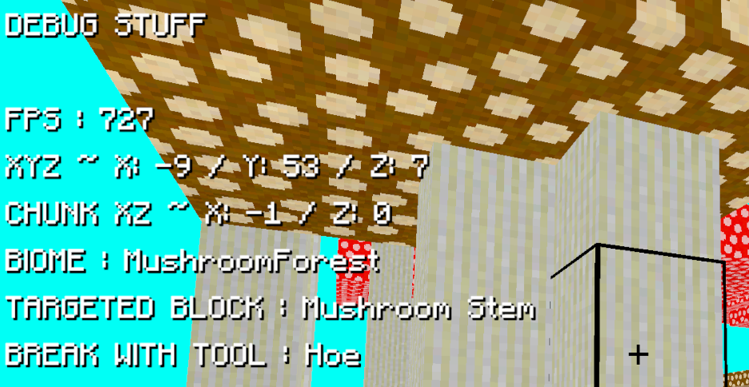
For this next feature, I'm still finding it weird to look at. I made it where items that aren't supposed to stack, no longer stack. There's nothing wrong with it, but you might see what I mean.
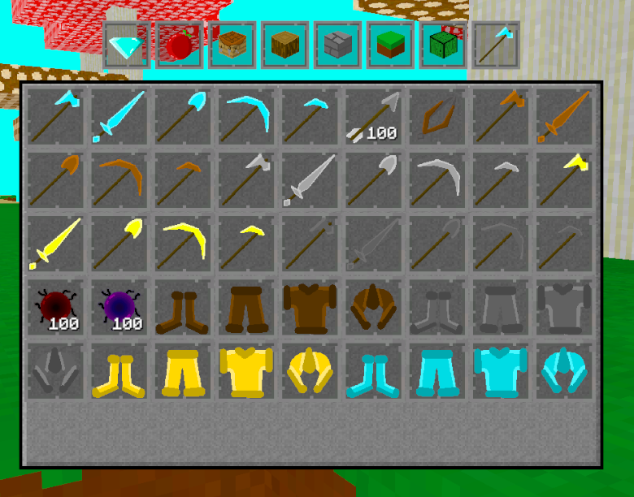
Finally for this next and last feature addition, I thought it might be time to add a quick little menu to show the player how to play the game. Nothing too in depth or anything. Just a list of the buttons to press. And the buttons are up for change in the future, once all the essential features are in the game. This will be useful if I start getting test players in the game soon. I won't have to constantly answer what button does what.
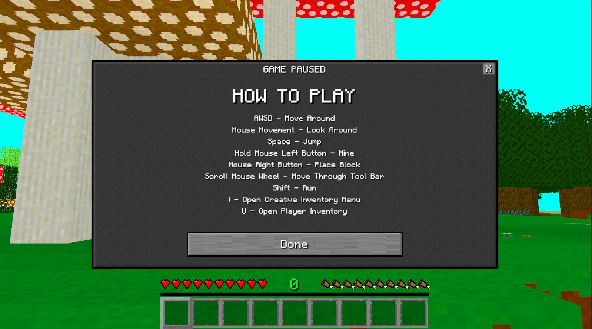
Blocks
I think there will always be a block section of each devlog update. I just love adding new blocks to the game. And currently, I've been filling in some of the missing blocks in the game. Like the Blackstone block set.
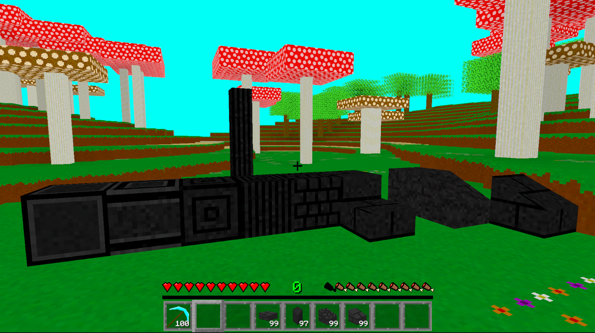
I also added some new blocks. From left to right you got: Coarse Dirt, Moss, Ancient Infernal Ore, and Spirit Soil. The last two are new Infernal Realm blocks if you couldn't guess.
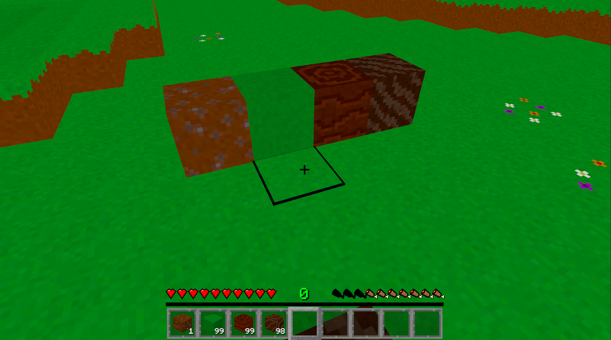
I decided to add a slab variant for all the tile blocks in the game. So here they are. I think the tile blocks and slabs would be good for floors or ceilings.
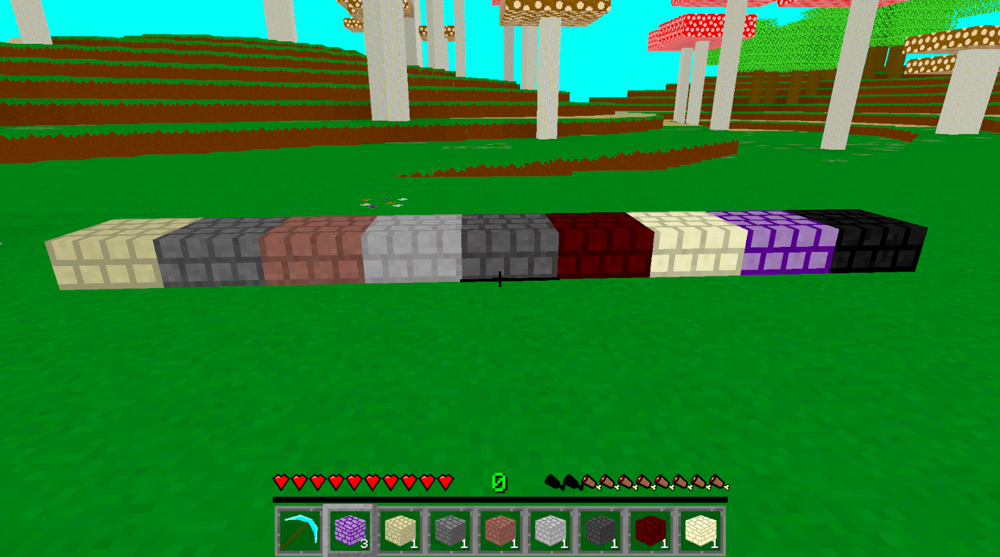
Items
Thinking along the lines of things the player will need in their more essential gameplay experience, I was thinking of a way to pass the night: a bed. So, I added all the different coloured beds. Not that I have day/ night cycles yet, or even teh ability to sleep in the bed. And I made the bed an actual block as well. Also I really don't love how tedious it is to add sixteen of the exact same object, but slightly different. It just really takes up the time. Also I might tile down in the future how dirty the beds look. But for now, it's fine. Though having the bed next to other Minecraft-gameplay-like blocks, does make me feel happy.
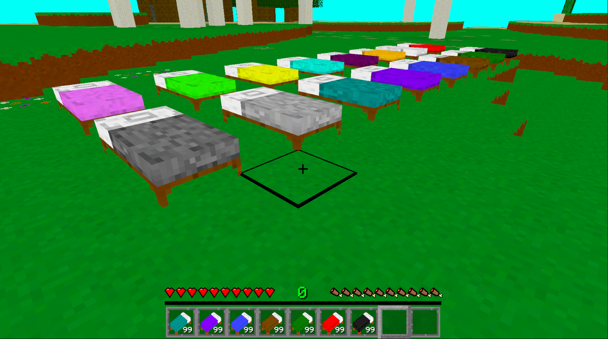
Another item the player will need in their gameplay experience is armour. Right now it's just an item that doesn't do anything, but it's there. Progress! This is also an instance of me taking a picture before I added in one of the main features. Don't worry about it.
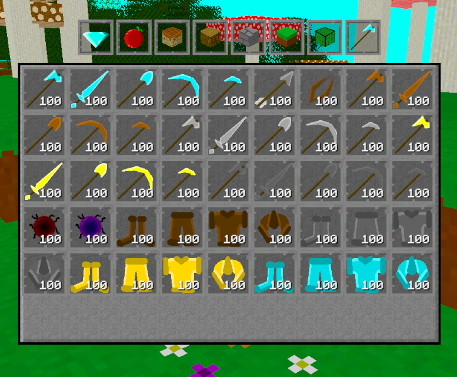
Right after adding the new Ancient Infernal Ore I was thinking that I of course had to add the full Infernal Tools and Armour sets. I did add an ingot for this by the way. These would be my version of Netherite items from Minecraft of course.
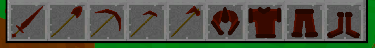
Conclusion
I love all these new additions to the game. It's starting to look and feel just a tad more like an actual polished game. But there's just so much to do! Honestly I would've loved to keep adding more and more stuff to this update, but I have to stop and work on something else. But there's just so much player experience related tasks I could be adding into the game. The biggest one is something that wasn't even included in this devlog. That's because it's just boring; I don't have recipes for almost anything in the game. Player can't quite experience the full gameplay if almost every block and item is locked behing a crafting recipe that doesn't exist. So this is something that I'm going to be doing in between devlogs. What joy awaits me there.
I'm trying to think of what I could do for the next devlog update. Because I really want to keep adding in more essential features, and adding onto the player experience. But I also want to work on a something more than just small little additions here and there. I'm sure I'll think of something.